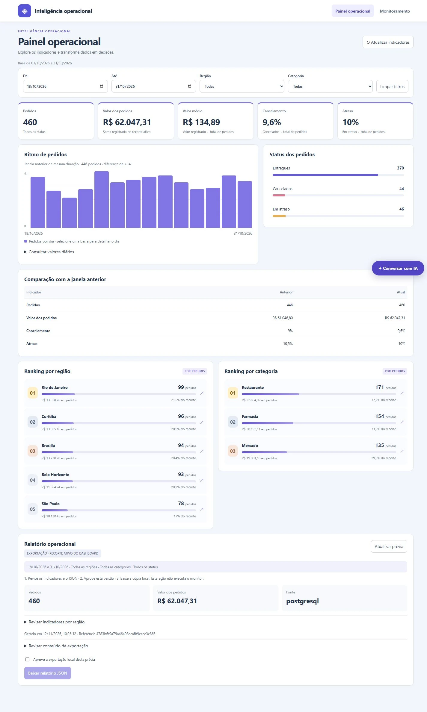
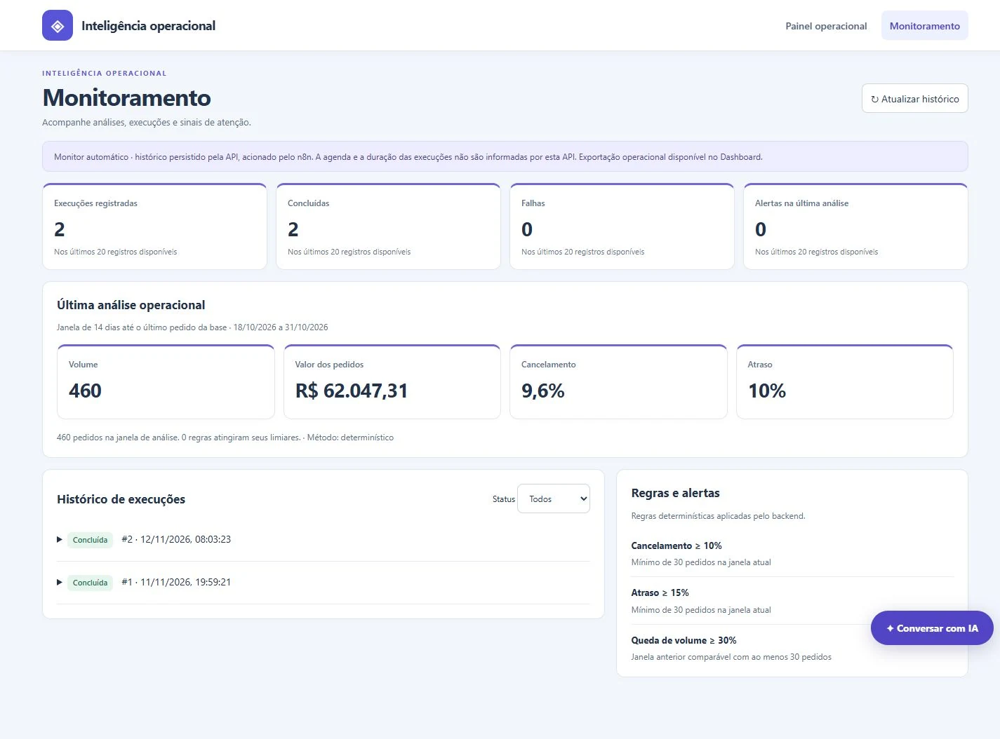
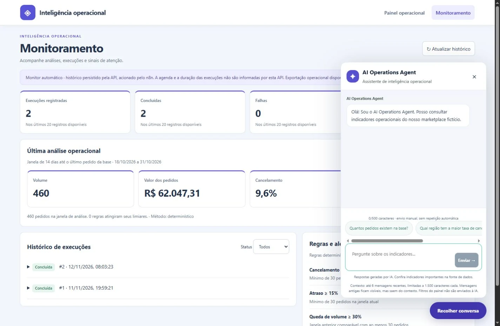

Análise de Dados · IA aplicada · Automação
Agente de Inteligência Operacional
Do indicador à investigação da operação
01 / Contexto
O cenário e o escopo
Neste projeto autoral, construí um caso de análise de dados, BI, SQL, automação e IA aplicada sobre um marketplace fictício. Minha atuação reúne a geração da base, ETL e persistência em PostgreSQL, definição dos indicadores, painel React, API FastAPI e assistente Gemini com ferramentas de leitura. A base contém 1.000 pedidos de outubro de 2026, cinco regiões e três categorias.
02 / Problema e objetivo
O que precisava ser resolvido
O total de pedidos não explica onde se concentram cancelamentos e atrasos, nem quais recortes merecem investigação. A solução precisava combinar exploração flexível, acompanhamento consistente de regras e acesso aos indicadores em linguagem natural, mantendo os cálculos no sistema.
03 / Arquitetura e desenvolvimento
Da fonte à entrega
- 01CSV sintético → ETL
- 02PostgreSQL → FastAPI
- 03Painel · Monitor · Gemini
- 04Relatórios + histórico
Fluxo resumido para leitura. A documentação do repositório detalha contratos, fontes, etapas e reprodução.


04 / Desafios e decisões
Escolhas que sustentam a solução
- Filtros de período, região, categoria e status definem um recorte consistente; a comparação usa a janela anterior de igual duração quando há cobertura completa.
- O painel permite investigar dias e rankings. A prévia e o JSON compartilham os filtros; mudar o recorte invalida a aprovação da exportação.
- O monitor aplica regras determinísticas de cancelamento, atraso e queda de volume, com volume mínimo, histórico em monitor_runs e controle de sucesso diário.
- Gemini consulta apenas ferramentas de leitura autorizadas, sem SQL arbitrário. O chat mantém contexto limitado na sessão e a chave permanece no servidor.
- n8n aciona a API no exemplo local; na demonstração Oracle com HTTPS, a agenda systemd executa o monitor às 09h de São Paulo pela mesma API.
05 / Resultados e evidências
O que é possível verificar
A entrega integra painel, monitor e assistente sobre a mesma base sintética. Na captura documentada de 18 a 31/10/2026, o painel apresenta 460 pedidos, R$ 62.047,31 em valor dos pedidos, 9,6% de cancelamento e 10% de atraso. Esses indicadores orientam a investigação dos recortes; valor dos pedidos inclui todos os status e não equivale a receita. A demonstração está publicada com HTTPS, PostgreSQL e chat Gemini.
Evidência pública
Telas reais do painel, monitoramento e chat, código dos indicadores, ETL, ferramentas do agente e documentação de implantação. A validação local de 12/11/2026 registra 56 testes Python com PostgreSQL, lint e build do frontend aprovados.
Documentação e CI da versão publicada consultados em 13/11/2026.
Monitoramento com histórico


Assistente para consultar indicadores


Vamos conversar
Um próximo desafio
com dados e negócio
Busco oportunidades como Analista de Dados, Analista de BI ou Cientista de Dados, além de funções híbridas entre essas áreas.